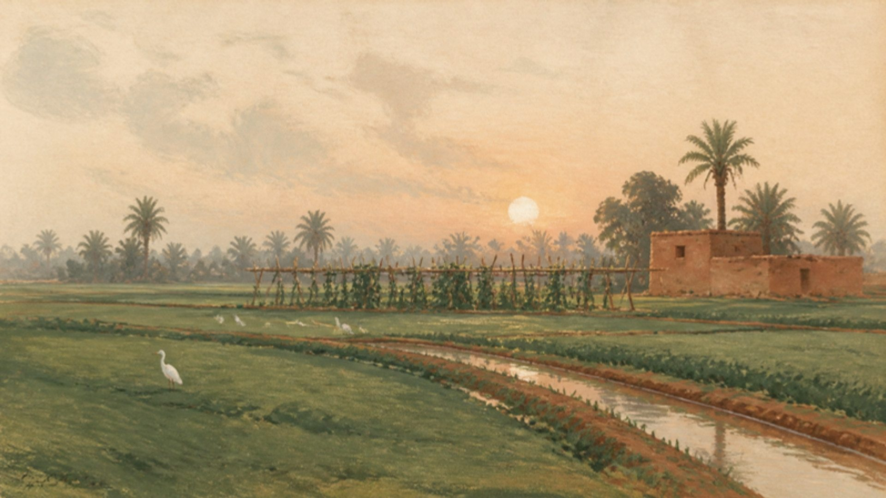
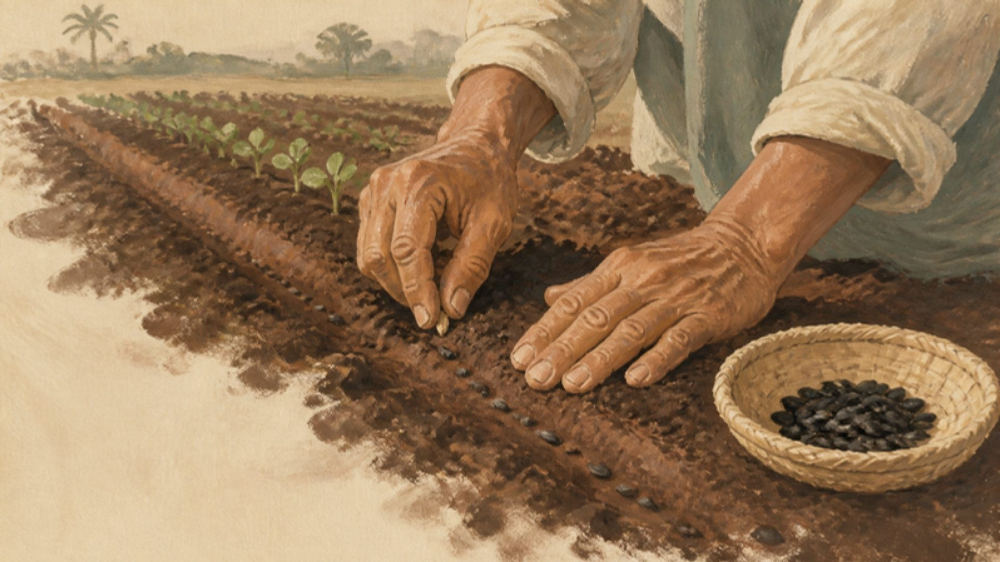
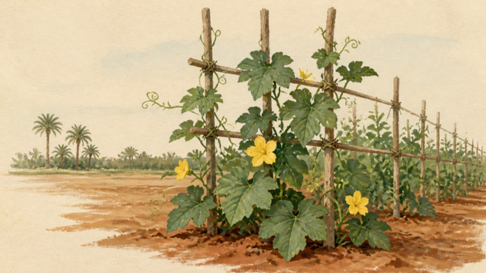
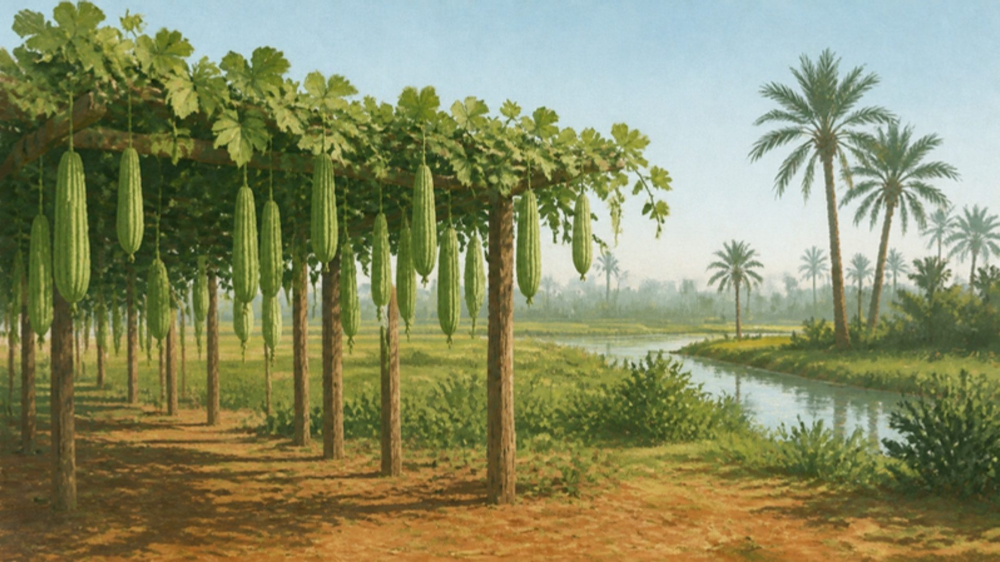
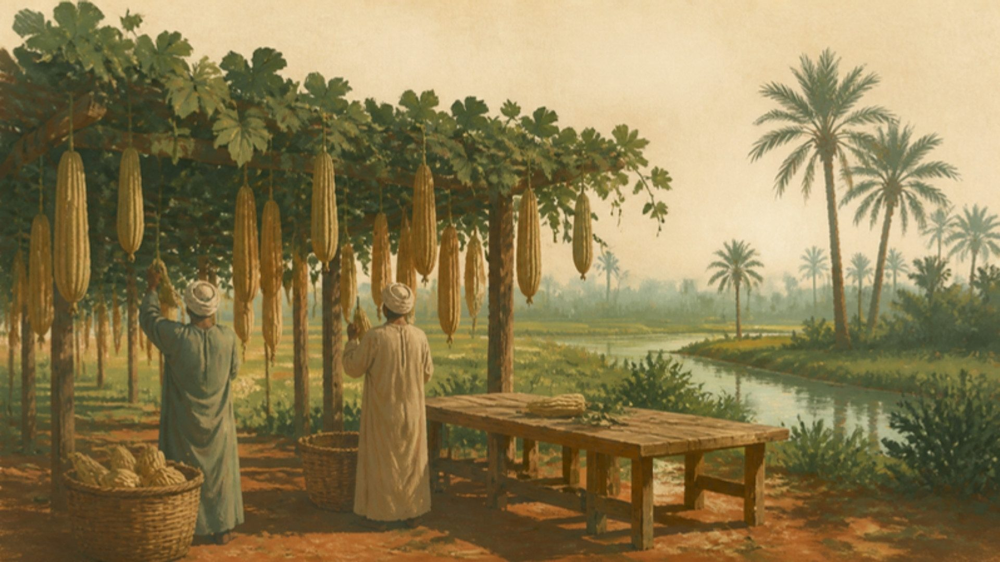
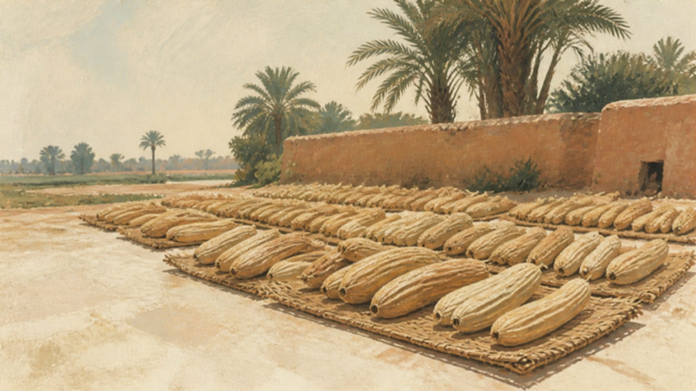
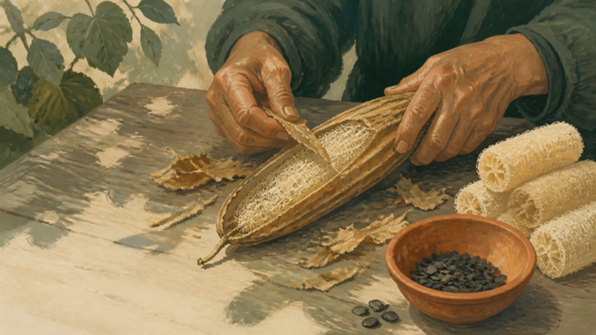
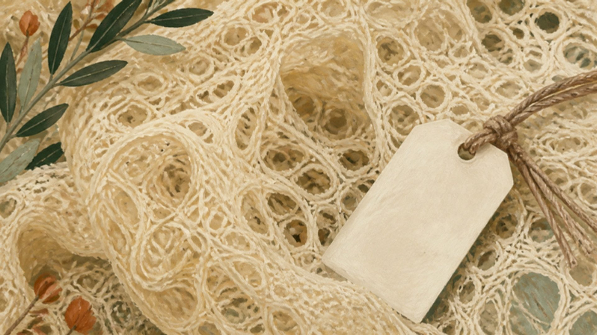
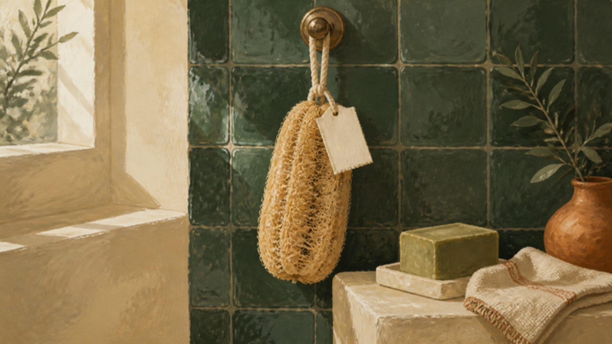

01 / 07 · Field 7We begin
We begin
with the field.
Field 7 lies in the flat green farmland of the Nile Delta, between the canals and the date palms of Damanhour.

Field 7 lies in the flat green farmland of the Nile Delta, between the canals and the date palms of Damanhour.

Planting starts as the days lengthen, in March and April. The seeds come from last year’s harvest.

Gourds climb the trellises from March and hang to arm’s length by late summer.


We pick in September, once the skin turns from green to brown and light.

Twenty-one days drying in the open air. Nothing is bleached: the colour you see is the sun’s.
01Days in the sun


Skins come off by hand and the seeds are saved for spring. Grade A means 58 fibres in every square centimetre.
00Fibres per cm²

The cotton tag fades as the loofah wears. By day 60 a fresh one arrives, and the old one goes back to the soil.
01Days in your shower
The countryside, and the laurel.
Al Reef means the countryside: the Nile Delta farmland where our loofahs grow on trellises at Field 7, Damanhour. Laurel is the oil in our Sabon Ghar, the soap of Levantine hammams.
Seeds go into Delta soil as the days lengthen, in March and April.
Picked in September once the gourds turn light and dry.
Twenty-one days in the open air. Peeled, seeded and rinsed by hand.
Every batch counted: Grade A means 58 fibres per cm².